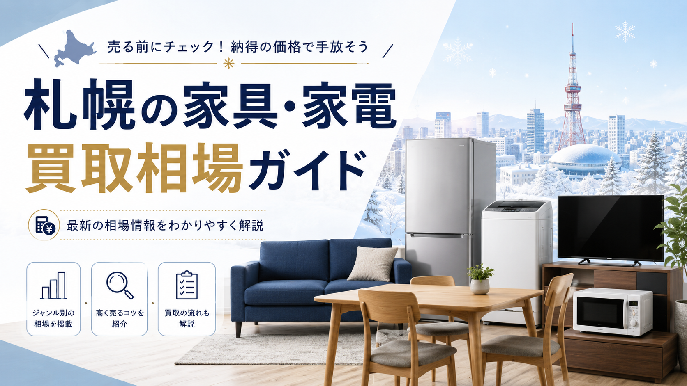

北海道お問合せ 10:00-20:00 年中無休
LINE・WEB受付
LINE査定
PRICE GUIDE / SAPPORO
札幌で冷蔵庫・洗濯機・テレビ・電子レンジ・ソファ・ダイニング・ベッド・食器棚など、家具家電を売るときの買取相場の目安を主要品目別にまとめました。査定で見られるポイント、札幌ならではの暖房器具・冬物需要、高く売るコツ、出張買取の使い分けまで、売る前に押さえておきたい知識を解説します。

札幌で引っ越し、買い替え、実家整理、遺品整理などを進めるとき、不要になった家具や家電を「できるだけ高く売りたい」と考える方は多いです。
しかし、家具・家電の買取価格は、単純に購入時の価格だけで決まるわけではありません。年式、状態、メーカー、需要、搬出のしやすさ、札幌市内での再販ニーズなど、さまざまな条件によって査定額は変わります。
特に札幌では、単身者向けの家電、ファミリー向けの大型家具、冬に需要が高まる暖房器具など、地域特有の需要もあります。そのため、売るタイミングや依頼方法によって、買取価格に差が出ることがあります。
この記事では、札幌で家具・家電を売るときの買取相場、査定で見られるポイント、高く売るためのコツ、出張買取を利用するメリットについて解説します。
家具・家電の買取相場は、商品の種類や状態によって大きく異なります。ここでは、札幌で一般的に買取対象になりやすい品目の目安を紹介します。
冷蔵庫は、年式と容量によって査定額が大きく変わります。単身用の小型冷蔵庫は需要が安定しており、学生や単身赴任者向けに再販されやすい品目です。
目安としては、製造から5年以内の単身用冷蔵庫であれば、数千円から1万円前後の買取になることがあります。ファミリー向けの大型冷蔵庫で、国内有名メーカー、状態が良好なものは、1万円以上の査定がつく場合もあります。
一方で、製造から10年以上経過している冷蔵庫、庫内のにおいが強いもの、外装に大きなへこみがあるものは、買取が難しいこともあります。
洗濯機も、札幌で需要の高い家電のひとつです。特に一人暮らし向けの縦型洗濯機は、引っ越しシーズンに需要が高まります。
製造から5年以内の縦型洗濯機であれば、数千円から1万円前後が目安です。ドラム式洗濯機は新品価格が高いため、状態が良く、年式が新しいものは数万円の査定になることもあります。
ただし、洗濯槽の汚れ、異音、水漏れ、排水ホースの劣化などがある場合は、査定額が下がりやすくなります。
テレビは、サイズ、メーカー、製造年、画質性能によって相場が変わります。
32インチ前後の液晶テレビは、単身者向けに需要があり、年式が新しければ数千円から1万円前後の買取が期待できます。40インチ以上の大型テレビや、4K対応モデル、有名メーカーのモデルは、状態によって1万円以上になることもあります。
一方で、古い液晶テレビ、リモコンがないもの、画面に傷や焼き付きがあるものは、査定が厳しくなります。
電子レンジ、炊飯器、掃除機などの小型家電は、単品では高額査定になりにくいものの、まとめて売ることで買取対象になりやすくなります。
電子レンジは、年式が新しく、庫内がきれいなものが評価されます。炊飯器は、人気メーカーの高機能モデルであれば査定がつきやすいです。掃除機は、コードレス掃除機やロボット掃除機など、需要の高いタイプであれば比較的高く売れる可能性があります。
小型家電は、説明書や付属品がそろっていると査定で有利になります。
家具は家電に比べて、状態やデザイン、搬出条件の影響を受けやすい品目です。大きな家具ほど、再販需要だけでなく、運搬コストも査定に影響します。
ダイニングテーブルやチェアは、状態が良く、デザインがシンプルなものほど買取されやすいです。特に、無印良品、ニトリ、IKEA、カリモク、飛騨産業など、ブランドやメーカーが分かりやすい家具は査定しやすくなります。
椅子がセットでそろっている場合や、天板に大きな傷がない場合は、査定額がつきやすいです。
ソファは人気のある家具ですが、使用感が出やすいため、査定では状態が重視されます。
布製ソファの場合は、シミ、におい、へたり、ペットの毛などが査定に影響します。レザーソファの場合は、ひび割れや破れがないかが見られます。
札幌ではファミリー向けの大型ソファも需要がありますが、搬出が難しい場合や再販しにくいデザインの場合は、査定額が下がることがあります。
ベッドフレームは買取対象になることがありますが、マットレスは衛生面の理由から買取が難しい場合があります。
特に、シミやへたりがあるマットレス、使用年数が長いものは、買取不可になるケースもあります。一方で、有名ブランドのベッドフレームや、状態の良い収納付きベッドなどは、査定対象になる可能性があります。
食器棚、本棚、チェスト、テレビボードなどの収納家具は、状態とサイズが重要です。
札幌市内の住宅事情では、あまりに大型すぎる家具は搬出や再販が難しいことがあります。そのため、一般家庭で使いやすいサイズ、シンプルなデザイン、傷や汚れが少ないものが評価されやすいです。
家具・家電は、売る時期によって査定額が変わることがあります。
札幌で特に需要が高まりやすいのは、2月から4月の引っ越しシーズンです。新生活を始める学生、単身赴任者、新社会人が増えるため、冷蔵庫、洗濯機、電子レンジ、テレビ、ベッド、テーブルなどの需要が高まります。
札幌ならではの需要：暖房器具は秋から冬にかけて需要が高くなります。石油ファンヒーター、電気ストーブ、パネルヒーターなどは、寒くなる前に売る方が査定で有利になることがあります。
一方で、需要が低い時期や在庫が多い時期は、同じ商品でも査定額が下がる可能性があります。売却を急がない場合は、需要が高まる少し前に査定を依頼するのがおすすめです。
札幌で家具・家電を高く売るためには、査定で評価されやすいポイントを理解しておくことが大切です。
家電の場合、製造から5年以内のものは買取対象になりやすいです。特に冷蔵庫、洗濯機、テレビ、電子レンジなどは、年式が新しいほど再販しやすくなります。
10年以上経過している家電は、動作に問題がなくても買取が難しい場合があります。
家具も家電も、見た目の状態は査定に大きく影響します。
ほこり、汚れ、におい、シミ、傷、へこみなどが少ないほど、査定で有利になります。査定前に軽く掃除しておくだけでも印象が変わります。
家電では、パナソニック、日立、東芝、シャープ、三菱、ソニー、ダイソンなどの有名メーカーが評価されやすいです。
家具では、カリモク、飛騨産業、無印良品、ニトリ、IKEA、unico、ACTUSなど、再販時に検索されやすいブランドは査定がつきやすくなります。
リモコン、電源コード、説明書、保証書、棚板、ネジ、パーツなどの付属品がそろっていると、査定額が上がりやすくなります。
特にテレビのリモコン、掃除機のアタッチメント、炊飯器の内釜、家具の組み立てパーツなどは重要です。
すべての家具・家電が必ず買い取られるわけではありません。以下のような場合は、買取不可または無料引き取り、処分費用が必要になることがあります。
製造から10年以上経過した家電は、再販後の故障リスクが高いため、買取が難しいことがあります。特に冷蔵庫や洗濯機などの大型家電は、古くなるほど査定が厳しくなります。
電源が入らない、異音がする、水漏れする、画面が映らない、部品が欠けているといった不具合がある場合は、買取対象外になる可能性があります。
タバコ臭、ペット臭、カビ臭、食品のにおいなどが強い家具・家電は、再販が難しくなります。
冷蔵庫や洗濯機、ソファ、マットレスなどは、においや衛生状態が特に重視されます。
札幌市内のマンションや戸建てでは、階段、エレベーター、玄関、廊下の幅によって搬出の難易度が変わります。
大型の食器棚、ソファ、ベッド、タンスなどは、搬出に人員や時間がかかるため、査定額に影響することがあります。
家具・家電を売る方法には、店舗への持ち込み、フリマアプリ、ネットオークション、出張買取などがあります。その中でも、大型家具や大型家電を売る場合は、出張買取が便利です。
冷蔵庫、洗濯機、ソファ、食器棚などは、自分で運ぶのが大変です。車の手配、搬出作業、積み込みなどを考えると、個人で対応するのは負担が大きくなります。
出張買取であれば、自宅まで査定に来てもらえるため、重い家具や家電を運ぶ必要がありません。
引っ越しや実家整理では、家具・家電だけでなく、食器、雑貨、ブランド品、楽器、工具、カメラ、オーディオなど、さまざまな不用品が出ることがあります。
出張買取では、複数の品物をまとめて見てもらえるため、単品では値段がつきにくいものでも、まとめ売りによって買取対象になる場合があります。
札幌はエリアが広く、中央区、北区、東区、白石区、豊平区、西区、南区、手稲区、厚別区、清田区など、地域によって移動距離も変わります。
出張買取を利用すれば、自宅や実家にいながら査定を受けられるため、忙しい方や車を持っていない方にも便利です。
査定前に少し準備しておくことで、買取価格が上がる可能性があります。
冷蔵庫の庫内、洗濯機の外側、電子レンジの庫内、テレビ画面、家具の天板などは、簡単に掃除しておきましょう。
新品のようにする必要はありませんが、ほこりや汚れを落としておくだけで査定時の印象が良くなります。
家電は、型番と製造年が査定の重要な情報になります。冷蔵庫や洗濯機は本体側面や背面、テレビは背面ラベルに記載されていることが多いです。
事前に写真を撮っておくと、問い合わせ時のやり取りがスムーズになります。
リモコン、説明書、コード、棚板、パーツなどは、できるだけまとめておきましょう。付属品がない場合でも査定は可能ですが、そろっている方が評価されやすくなります。
出張買取では、1点だけよりも複数点まとめて依頼した方が効率的です。家具・家電以外にも、ブランド品、時計、カメラ、楽器、工具、食器、贈答品などがあれば、一緒に査定してもらうのがおすすめです。
家具・家電を売る方法として、フリマアプリを検討する方も多いです。フリマアプリは、自分で価格を設定できるため、高く売れる可能性があります。
ただし、大型家具・家電の場合は、梱包、配送、搬出、購入者とのやり取り、トラブル対応が必要になります。特に札幌から大型商品を発送する場合、送料が高くなり、利益が少なくなることもあります。
一方、出張買取はフリマアプリより売却価格が低くなる場合もありますが、査定から搬出までまとめて任せられるのが大きなメリットです。
使い分けの目安：「時間をかけても高く売りたい」場合はフリマアプリ、「早く片付けたい」「大型品をまとめて売りたい」場合は出張買取が向いています。
札幌で家具・家電を売る際は、買取価格だけでなく、サービス内容も確認しておきましょう。
出張費や査定料が無料か、買取できない品物の引き取りに対応しているか、搬出作業を任せられるか、即日対応が可能かなどを事前に確認しておくと安心です。
また、マンションの場合は、エレベーターの有無、駐車スペース、搬出経路も査定に関係することがあります。大型家具や大型家電を依頼する場合は、事前に伝えておくとスムーズです。
札幌で家具・家電を売る場合、買取価格は年式、状態、メーカー、需要、搬出条件によって変わります。
冷蔵庫、洗濯機、テレビなどの家電は、製造から5年以内で状態が良いものほど査定がつきやすくなります。家具は、デザインがシンプルで状態が良く、再販しやすいものが評価されやすいです。
また、引っ越しシーズンや冬物需要が高まる時期など、札幌ならではのタイミングを意識することで、より良い条件で売れる可能性があります。
大型家具や大型家電をまとめて売りたい場合は、出張買取を活用すると、搬出の手間を減らしながら効率よく片付けられます。引っ越し、買い替え、実家整理、遺品整理などで不要品が出たときは、相場を把握したうえで、早めに査定を依頼してみるとよいでしょう。
家具・家電・家まるごと、しっかり高く。LINEで写真を送るだけで仮査定OK。
最短即日でお伺いします。査定無料・キャンセル料無料。